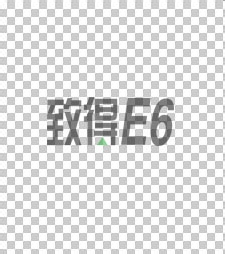

怎样制作半透明的图片？
- 浏览：1811
- |
- 更新：
首先到自己到网上下载Photoshop。
安装好后打开Photoshop，单击左上角工具栏中的“文件”按钮，再单击“新建”（Ctrl+N快捷键），然后就会出现这样一个窗口：
这里的预设选择“自定义”，宽度和高度根据需要自己进行调整，颜色模式选择“RGB颜色”，背景内容选择“透明”，其他的默认，不必改变。
设置好了之后单击“确定”，出现的就是透明背景，Photoshop中透明色是用方格纸代替的，如下：

接下来单击“文件”—“打开（快捷键Ctrl+O）”从你自己的电脑里选择一张图片，然后单击Photoshop左侧工具栏中的套索工具按钮，如下：
左边数第二个就是套索工具，即
单击它你会发现右边会出现三个选择，选磁性套索工具。然后鼠标在你要抠出的图的边缘移动，它会自动靠着图片边缘进行抠图，举个例子，如下图：
要抠出图中的小女孩，可以用磁性套索工具，抠好之后，小女孩的边缘会出现一个虚线框，然后单击Photoshop上方工具栏中的“编辑”按钮，选择“拷贝”（当然，你也可以选择剪切），然后切换到刚才做好的透明背景图层上，单击上方工具栏中的“编辑”按钮，选择“粘贴”（快捷键Ctrl+V），小女孩就会被换到透明背景上，如下：
你可以选择左侧工具栏中的移动按钮，即将小女孩拖动到你想要的位置。如果你觉得背景相对于小女孩太大，可以选择左侧工具栏中的裁切工具，即在对图片进行裁切之前，可以先设定一下图片的大小，比如你想要的图片大小是240*320，你可以在单击了裁切工具之后，在Photoshop上方工具栏处进行修改，如下：

对宽度和高度进行修改就可以了，数字后面的单位选择像素，即px。
现在，你可以对图片进行裁切了，裁切后的效果：
你可以鼠标拖动中间亮的区域，让它覆盖住小女孩，也可以把鼠标放到亮区四个角的位置调整大小，直到你满意为止。
然后按一下回车键，图片就做好了。
最后一步，保存。
Photoshop中，这个叫做图层，而不是图片，所以你保存的时候要将它保存为图片格式。
常见的图片格式有jpg和png等。
单击上方工具栏的“文件”按钮，选择“存储为Web和设备所用格式”，然后会跳出来一个窗口，你会看到右侧有这样的按钮：
单击右边向下的箭头，选择“PNG-8”，然后单击存储就行了。
这样做出来的图片就是透明图片。


![]()